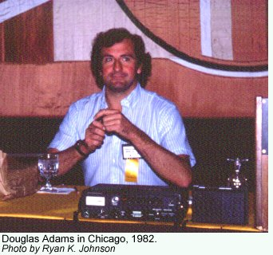
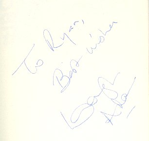

| Remembering Douglas Adams | ||||||
Writer Douglas Adams died on May 11, 2001 in Santa Barbara of a sudden heart attack. Only 49 years old, his Hitchhiker's Guide To The Galaxy achieved world wide fame as a BBC radio series, novel, TV series, and various proposed movies. He also created computer games, wrote other novels, and worked on Doctor Who. I was lucky enough to see Mr. Adams in person over the years and I want to share my memories of him with you. I first heard of The Hitchhiker's Guide To The Galaxy in 1980 while attending a science fiction convention in Seattle. Someone had brought a tape to the convention of the first six episodes of the radio series and they were played over the P.A. system in a room for three hours. The lights were turned down low, we closed our eyes, used our imaginations, and in my case laughed myself silly with the antics of Arthur Dent (Simon Jones) as a survivor from the destroyed planet Earth meeting hyper-intelligent mice. "Who thought this up?" I wondered. It was brilliant.  The next year, NPR Playhouse played the series and I was able to tape copies of Hitchhiker's off the air for myself. Then I discovered there were books based on the series. I quickly snapped them up and made note of the differences between the novel and radio versions. In 1982, at the Worldcon in Chicago, I had my first opportunity to hear Mr. Adams speak. In a large ballroom, he spoke to enthusiastic fans about the origins of Hitchhiker's and his time as a story editor on Doctor Who. He was only scheduled for an hour but clearly had much more to say. With the assent of the crowd, the panel was reconvened in a smaller meeting room for another hour. Sitting in the front row was a real treat for me and I clearly remember him looking me right in the eye as he tried to describe why such technological "marvels" like artificial images on video phones were a terrible idea. He also related what it was exactly he hated about digital watches, namely that in their early LED versions you needed two hands to operate one and in fairly low light conditions. Which meant if you were at the airport and wanted to know if you were late, you'd have to find a dark corner, put down your luggage, and then use both hands to check the time! Adams clearly felt such "advances" were hardly progress. Later that day, I managed to catch the same elevator with Mr. Adams which allowed me a few moments to thank him for his entertaining and well-thought out talk.Later that year, I discovered there had been a BBC television version of Hitchhiker's and someone I knew in Canada had a tape of it! I quickly arranged to get a copy and I must say it was possibly the worst-quality video tape I've ever had to watch. Back in the bad old days of tape trading with Britain (remember, this was 1982 - VCRs were still newfangled technology) when digital conversions of PAL (the British video standard) into NTSC cost hundreds of dollars, enterprising fans would make "camera copies" by pointing a NTSC camera at a PAL TV set. The resulting flickering version could then be watched in the US but frequent headaches by viewers were a result. This copy of Hitchhiker's I received was one of the these "camera copies" but also had been subsequently dubbed about another eight generations by the time I got it. The picture was so bad I never did get a clear idea of what the Vogons looked like! Nevertheless, I was such a fan it was a coup just to be able to see this rare (at the time) item. Eventually, PBS came to the rescue running a bizarre seven-part mutant version of the TV series (PBS at the time was unable to handle Hitchhiker's original 30 minute running length and edited the six episodes into seven 25-minute episodes with the cliffhangers all messed up). Meanwhile, Douglas Adams could be frequently seen on the book tour circuit and this brought him to Seattle on a number of occasions. I was delighted to read in the paper that one of my favorite authors would be doing a signing at my local bookshop, and I would stand in line to get his autograph on his latest book. I attended so many of these that five years ago, going through a rolled up set of posters I was delighted and surprised to find an autographed poster of "So Long and Thanks For All The Fish" in my collection. I didn't even remember getting it, I must have just picked it up at a book signing and stuck it in the back of the closet at the time. I had it mounted and it now hangs on my bedroom wall, the faint signature visible in the lower right corner.  There was always talk of a Hitchhiker's movie, a big-budget American version possibly directed by Ivan Reitman (Ghostbusters). But an initial script was priced out to the then-astronomical cost of $30 million - and that was just to get as far as the Vogons destroying the Earth. "Too expensive," muttered the executives and project lingered in "development hell" for decades. However, the success of Men In Black and Galaxy Quest revived the idea in Hollywood of doing funny science fiction movies and digital technology made eye-popping effects possible on a budget. Someone remembered The Hitchhiker's Guide To The Galaxy project, and Adams was enlisted to work on a new script. Sadly, if it is ever to be brought to the big screen it will have to be posthumously now.
| ||||||